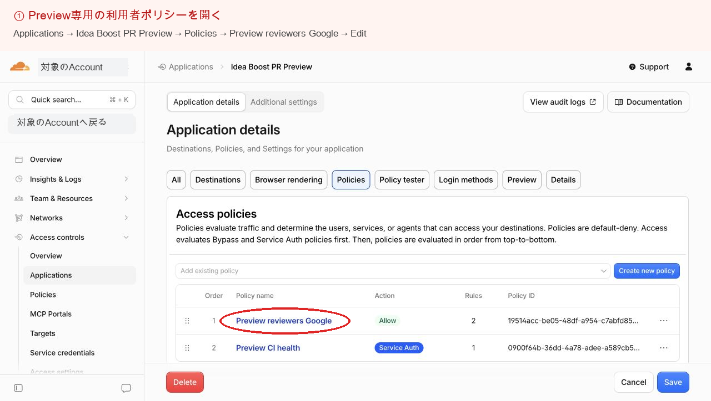
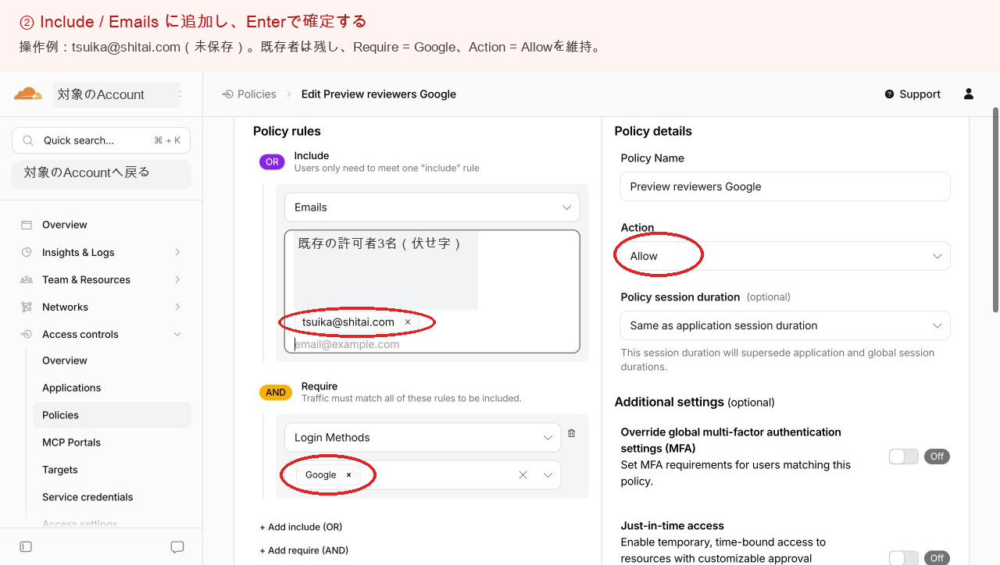
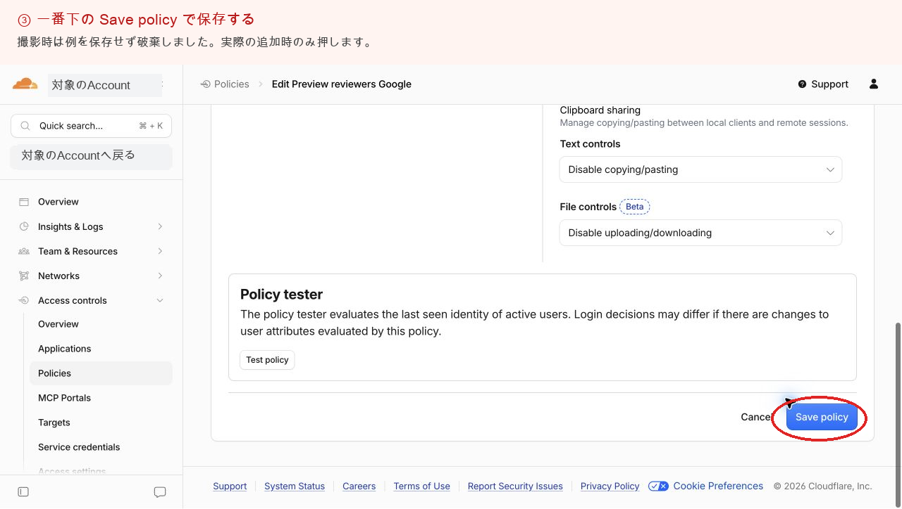
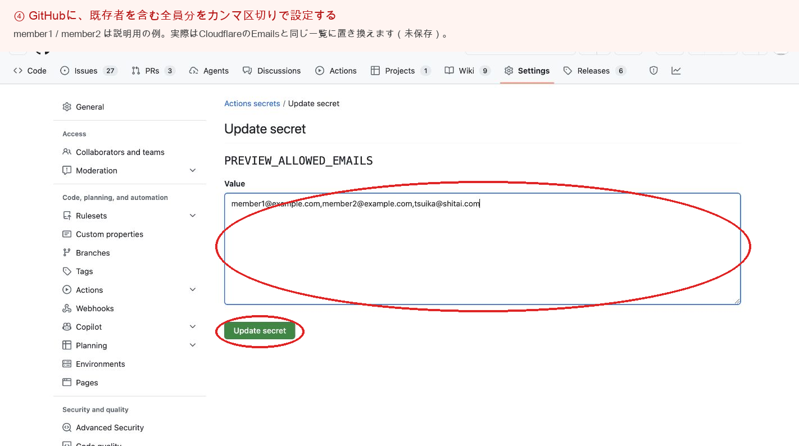

PR Preview / 運用手順
PR Previewにログインできるのは、許可したGoogleアカウントだけです。新しいメンバーや、2人分の確認に使う2つ目のアカウントを足すときは、この手順で追加します。開発メンバーなら誰でも作業できます。
許可一覧は「追加」ではなく「全員分で上書き」する設定です。新しい人だけを入力して保存すると、それまでのメンバーがログインできなくなります。Cloudflareでは既存の札を残したまま足し、GitHubには毎回全員分を入れます。
メールアドレス一覧の正本はチームのDiscordにあります。このページは誰でも見られる公開ページなので、アドレスは載せません。
学校などのアドレスも、Googleアカウントとしてログインできるものなら使えます。PreviewはGoogleでのログインだけを許可しています。
| 場所 | 必要なもの | 持っていないとき |
|---|---|---|
| Cloudflare | Idea BoostのPreviewを置いているCloudflareアカウントのメンバーで、Accessを編集できること | アカウントのメンバーに作業を頼むか、メンバーとして招待してもらう |
| GitHub | engineer-first/idea-boostのAdmin権限（Secretの編集に必要） | 開発メンバーは全員Adminです。足りなければ管理者に頼む |
Googleでログインした人をPreviewに通すかどうかを、Cloudflare Accessが決めています。
Preview CI healthはCI用なので触りません。

tsuika@shitai.comは説明用の例で、既存の許可者は伏せています。
Cloudflareを通った後、アプリ自身ももう一度、許可一覧と照らし合わせます。その一覧がGitHubのSecret PREVIEW_ALLOWED_EMAILSです。

member1@example.comなどは説明用の例です。形式の例: a@gmail.com,b@gmail.com,c@example.ac.jp全員分を1行で書いたファイルを、リポジトリの外（例: ホームディレクトリ）に置いて実行します。作業後はファイルを消します。
gh secret set PREVIEW_ALLOWED_EMAILS -R engineer-first/idea-boost < ~/allowed-emails.txtSecretは、Previewを公開するときにアプリへ渡されます。Secretを変えただけでは、すでに公開中のPreviewには反映されません。使いたいPRごとに公開し直します。
gh run list -R engineer-first/idea-boost --branch <PRのブランチ名> --workflow CI --limit 1
gh run rerun <表示されたrun ID> -R engineer-first/idea-boost| どこで止まるか | 見直す場所 |
|---|---|
| Googleでログインした直後、Cloudflareの画面で断られる | STEP 1。Cloudflareの札にそのメールがあるか、綴りが合っているか |
| Cloudflareは通ったが、アプリの画面で断られる | STEP 2とSTEP 3。Secretに全員分が入っているか、そのPRを公開し直したか |
| 前はログインできた人が急に入れない | Cloudflareの札かSecretを、新しい人だけで上書きしていないか。Discordの一覧から全員分を入れ直す |
手順は同じです。Discordの一覧から消し、Cloudflareの札を外し、GitHubのSecretに残る全員分を入れ直して、使っているPRのPreviewを公開し直します。
自分の2つ目のGoogleアカウントを、この手順で追加します。通常のウィンドウで1つ目、シークレットウィンドウで2つ目のアカウントにログインすると、別の参加者として同じルームに入れます。どちらかの画面でステップを選ぶと、2人が入ったまま同じルームがそのステップに切り替わります。